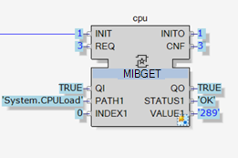
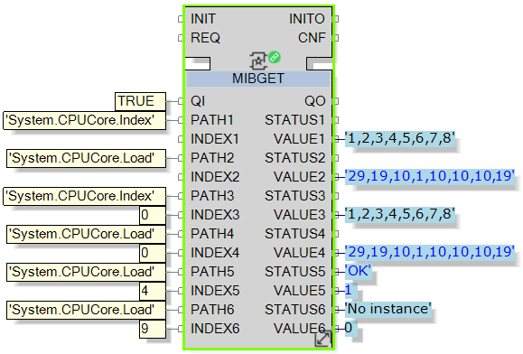

The event driven nature of IEC61499 implies that the most frequent state of a controller should be idle (in other words, it does nothing unless asked). Therefore, the CPU load of a device should remain below 60% under normal conditions. If this is not the case:
Optimize the application logic (for example, remove event loops)
Spread the application load (if supported by the platform) over multiple EcoStruxure Automation Expert resources.
Replace hardware that cannot support the level of performance required by the application.
To measure the CPU load, use the MIBGET function block to monitor the following MIBs:
System.CPULoad
System.CPUCore.Load
Use the MIB PATH OID 'System.CPULoad' to return a single value representing:
For Soft dPAC Linux, the total CPU capacity Soft dPAC is using across all cores. For example, if 2 cores are allocated to Soft dPAC and Soft dPAC load is 60% on each core, then total CPU load is 120%.
For M262 and M580 platforms, the CPU load of the core reserved for Runtime execution (2nd core).
For all other platforms (ATV, M251, and Soft dPAC Windows), the average CPU load of all cores at platform level.
CPU load at platform level - for all platforms except Soft dPAC Linux - includes the load of any additional software installed on the platform and run in parallel to the EcoStruxure Automation Expert application.
CPU load is measured internally every 5 seconds. The MIBGET REQ event should be triggered accordingly.
'System.CPULoad' can be implemented in a simplified MIBGET block:

The constant 'System.CPULoad' in the input PATH1 sets the VALUE1 output with the current CPU load, when the REQ event is triggered.
Use the MIB PATH OID 'System.CPUCore.Load' to return the load per CPU core at platform level. For Soft dPAC Linux, if you are running additional tools natively on the machine (i.e. outside of the Soft dPAC docker container), the related load is also reported by this MIB.
Consider the situation when Core 1 is experiencing 60% load and Core 2 is at 80% and part of that load is Soft dPAC using 40% on Core 1 and 70% on Core 2
'System.CPULoad' reports:
110% (40% + 70%).
'System.CPUCore.Load'reports:
60% on core 1
80% on Core 2
To collect information of CPU load by core, the following MIB PATH (OIDs) are available:
‘System.CPUCore.Index': the core index value:
0 (or no INDEX): returns a comma-separated list of all CPU core indexes available on the platform. Use the values reported here as INDEX input for System.CPUCore.Load'.
1...n: returns CPU core index for the specified core.
‘System.CPUCore.Load': the core load in tenths of percent:
0: returns a comma-separated list of all CPU core loads.
1...n: returns the load for the specified core index.

In this example, when the REQ event is triggered:
The list of CPU core indexes is provided on VALUE1 output.
The list of CPU core loads (at platform level) is provided on VALUE2 output.
The CPU load for core 4 is provided on VALUE5 output.
Because core 9 does not exist, inputting the value 9 into INDEX6 returns the STATUS6 ‘No instance’ and a VALUE6 output value of 0.
You can extend this configuration by adding additional inputs and outputs to return individual core values for specified cores. For example, you could add:
Input PATH7 = System.CPUCore.Load and INDEX7 = 1 so that VALUE7 returns CPU core load for CPU core index number 1.
System.CPULoad can be used to develop and commission your solution, to determine the amount of CPU your application will require on the platform.
System.CPUCore.Load can be used to determine that your solution does not exceed a maximum 60% of CPU load at core level and thereby enable expected operation of your EcoStruxure Automation Expert application in production. System.CPUCore.Load allows monitoring for occasional CPU spikes (caused, for example, by the EcoStruxure Automation Expert application, the operating system, or external tools running in parallel).